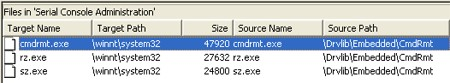
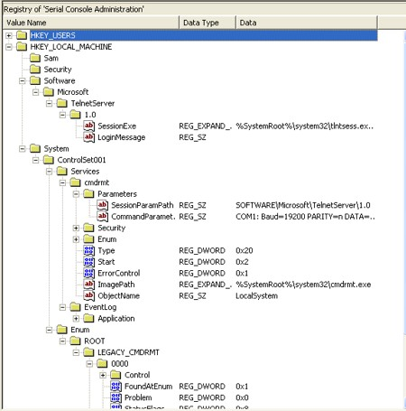
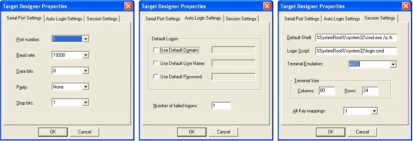
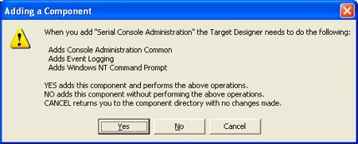
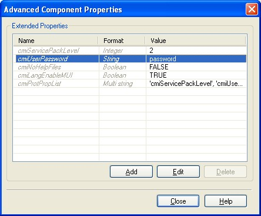
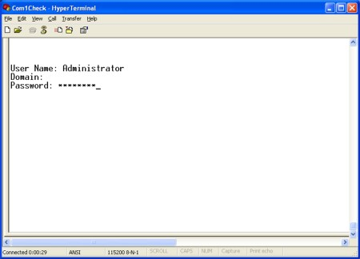
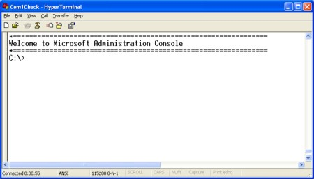
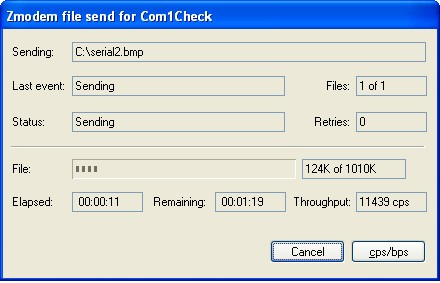
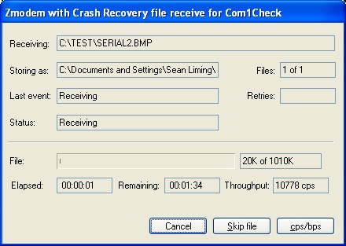

|
|
| Using Windows NT Embedded's serial console administration with Windows XP Embedded |
by Sean Liming (Mar. 21, 2005)
Foreword -- When Windows XP Embedded (XPe) first started shipping, it was "leaps and bounds" better than the original Windows NT Embedded (NTe), according to Microsoft embedded-MVP Sean Liming. But, says Liming, one popular NTe feature was notably lacking in XPe: Serial Console Administration (SCA), which provides the ability to remotely manage a system through a serial port. To work around that limitation, Liming has written this extensive whitepaper that shows how to incorporate NTe's SCA component into XPe.
Part 1 -- Background: A Feature from the Past
When Windows XP Embedded first started shipping, it was leaps and bounds better then original Windows NT Embedded. All the new PC technologies such as USB, IEEE 1394, multimedia, plug-n-play technologies, and ACPI were supported. The tools and database were improved. Many Embedded Enabling Features (EEF) were carried over and improved: the new Enhanced Write Filter could be disabled, system message interception and error reporting were enabled with a few registry keys, headless support was improved so a monitor, keyboard, and mouse could be added, CD-ROM boot support was carried over, a new cloning method was integrated to address the new First Boot Agent (FBA), and the various TCP/IP remote management solutions were brought over.
Noticed I said TCP/IP remote management features. There was one popular Windows NT Embedded feature that was left behind. A recent newsgroup poster reminded me that Serial Console Administration (SCA) was not part of XP Embedded. I first noticed this missing feature when I received my first copy of XP Embedded. I made a feeble attempt to take NT Embedded's SCA and run it on XP Embedded. The results were not encouraging. Seeking wise council, I talked with my good friend Jon Fincher at Microsoft. Telnet server was updated for functional and possible security fixes, but we didn’t come-up with a quick solution or answer for SCA. There were other new features of XPe I wanted to explore first, so I shelved SCA as a task to perform later. Later turned into a couple years.
The recent newsgroup poster brought the issue back to life. The newsgroup poster had a headless system that requires a static TCP/IP address to be set. SCA would serve as a nice solution to access the system and change the TCP/IP address at the command prompt. My suggestion to the newsgroup poster was to try taking the old NTe Serial Consol Administration and getting it working with XPe. The newsgroup poster took the advice. They built an XPe image and got SCA working by copying over the SCA files and replacing XPe’s Telnet Server with NTe’s telnet support. As a result, their system supported both Telnet and SCA.
I had to attempt this solution myself, so I can have some closure on my early attempt. My extreme embedded thinking wants to go to the simplest solution and support systems that don’t even have a network card, which is an ideal solution for anyone wanting a method to administrate their stand alone XPe system.
CAUTION
Before we proceed, please note: Using serial remote administration is not technically supported by Microsoft. Use this solution at your own risk!
Part 2 -- Developing the Solution
First, I verified what the newsgroup poster found by replacing telnet server and copying over SCA, and the solution worked. Replacing the telnet files and adding cmdrmt.exe post FBA is an okay method, but I prefer to just simply add an XPe component whenever possible. The following sections discuss the method and process I used to create an SLD and component for NTe’s SCA.
Test Setup -- Null Modem and HyperTerminal
First, I needed to make sure my test setup for SCA was working, which meant I had to build an NTe image with SCA. I dusted off my old copy of NT Embedded, took my Windows NT Embedded Step-B-Step book off the shelf, found Windows NT Workstation 4.0, and was lucky to find the latest Service Pack for NT 4.0 at msdn.microsoft.com. After setting up an NT 4.0 development system and building an NTe image, the test setup was up and running. HyperTerminal was used to establish a serial connection over a NULL-modem cable to the NTe target.
File and Registry Resources
Like XPe, NTe's components consisted of files, registry keys, and dependencies. The files for Serial Console Administrations components consisted of the following: - Cmdrmt.exe -- is the serial remote administration application
- Rz.exe -- is a Z-modem receive file transfer application. (See Appendix A for more information)
- Sz.exe -- is a Z-modem send file transfer application. (See Appendix A for more information)

Files View for the Serial Consol Administration in NT Embedded’s Target Designer
The files needed from NTe's Telnet are: login.cmd, termcap, tlntsess.exe, tlntsvr.exe, and tlntsvrps.exe. When you use the SLD, you will need to extract the component from the NTe CD. NTe is still available from Microsoft distributors.
One good thing from the old NTe days, as you can see in the picture below, viewing the registry in NTe is much simpler than XPe. Unfortunately, you cannot copy and paste the registry key paths text as easily.

Registry view for Serial Console Administration in NT Embedded
The challenge was to capture the NTe keys to put into an XPe component. The NTe image I built included REGEDIT.exe. Using NTe's SCA and Telnet components as a guide, I exported the different registry branches for SCA and Telnet from within my running NTe image to several .REG files. I had to change the header in each of the .REG files to reflect Regedit version 5.00, so XPe’s Component Designer would import the .REG file appropriately.
The SCA component in NTe had a properties dialog that allowed you to change the setup or registry keys via a dialog interface. These setup dialogs were known as Target Designer Extensions (TDX) in NTe. You could create your own TDX in NTe, but in XPe we are not so fortunate. We can only change the registry key values when the component has been added to a configuration within Target Designer. Of course you can preset the values in the component before the component is added to the database. The pictures below show the different tabs of the SCA properties page. The following table relates the properties to the registry key:

Serial Console Administration's Property Settings
(Click image for larger view)
Table: Serial Console Administration Parameters
| Tab | Parameter | Selectable
Options | Corresponding Registry Key | Serial Port
Settings | Port number | 1 thru 255 | HKEY_LOCAL_MACHINE\SYSTEM\ControlSet001\
Services\cmdrmt\Parameters\CommandParameters
COM1: Baud=115200 PARITY=n DATA=8 STOP=1 | | Baud rate | 9600
14400
19200
38400
57600
115200 | HKEY_LOCAL_MACHINE\SYSTEM\ControlSet001\
Services\cmdrmt\Parameters\CommandParameters
COM1: Baud=115200 PARITY=n DATA=8 STOP=1 | | Data bits | 7 or 8 | HKEY_LOCAL_MACHINE\SYSTEM\ControlSet001\
Services\cmdrmt\Parameters\CommandParameters
COM1: Baud=115200 PARITY=n DATA=8 STOP=1 | | Parity | Even
Odd
None
Mark
Space | HKEY_LOCAL_MACHINE\SYSTEM\ControlSet001\
Services\cmdrmt\Parameters\CommandParameters
COM1: Baud=115200 PARITY=n DATA=8 STOP=1 | | Stop bits | 1 or 2 | HKEY_LOCAL_MACHINE\SYSTEM\ControlSet001\
Services\cmdrmt\Parameters\CommandParameters
COM1: Baud=115200 PARITY=n DATA=8 STOP=1 | Auto
Login
Settings | Use Default
Domain | NA | HKEY_LOCAL_MACHINE\SYSTEM\ControlSet001\
Services\cmdrmt\Parameters\Domain | Use Default
User Name | NA | HKEY_LOCAL_MACHINE\SYSTEM\ControlSet001\
Services\cmdrmt\Parameters\UserName | Use Default
Password | NA | HKEY_LOCAL_MACHINE\SYSTEM\ControlSet001\
Services\cmdrmt\Parameters\Password | Number of failed
logons | NA | HKEY_LOCAL_MACHINE\SYSTEM\ControlSet001\
Services\cmdrmt\Parameters\MaxLogons | Session
Settings | Default Shell | NA | HKEY_LOCAL_MACHINE\SOFTWARE\Microsoft\
TelnetServer\1.0\DefaultShell | | Login Script | NA | HKEY_LOCAL_MACHINE\SOFTWARE\Microsoft\
TelnetServer\1.0\LoginScript | Terminal
Emulation | ANSI
Custom
VT100
VT52 | HKEY_LOCAL_MACHINE\SOFTWARE\Microsoft\
TelnetServer\1.0\TerminalEmulation | Terminal Size
Columns | | HKEY_LOCAL_MACHINE\SOFTWARE\Microsoft\
TelnetServer\1.0\Columns | Terminal Size
Rows | | HKEY_LOCAL_MACHINE\SOFTWARE\Microsoft\
TelnetServer\1.0\Rows | Alt Key
Mappings | 1 or 2 | HKEY_LOCAL_MACHINE\SOFTWARE\Microsoft\
TelnetServer\1.0\AltKeyMapping |
Component Dependencies
I knew that the XPe SCA component was going to require some dependencies on other components. Using NTe as a first step, what were SCA’s dependencies in NTe? When the SCA component is added in NTe, three components are automatically added to the configuration: - Console Administration Common, which includes the files login.cmd, termcap, tlntsess.exe.
- Event Logging -- The registry keys point to the event logs.
- Windows NT Command Prompt -- CMD.EXE or in XPe this is known as CMD Windows Command Processor component.

Adding the Serial Console Administration component in NT Embedded
Based on NTe’s component relationships, what are the dependencies for the XPe SCA component? We know that the SCA component is going to have dependencies on CMD Windows Command Processor and Event Log components. Because this is serial port administration, the Communications Port component is a logical dependency. If you have a unique serial card that requires a special driver, you will have to add the component separately and extablish the dependency. XPe's Telnet Server component is going to be a "conflict" with this component since the XPe and NTe Telnet component files are going to conflict with each other. Finally running Dependency Walker on cmdrmt.exe yields four component dependencies: Microsoft Visual C++ Primitive: Ntdll, Primitive: Ntlsapi, and Primitive Rundll32.
I found the files, registry, and resource. The next step was to create and test the component. The SLD that is separate from this document is the result. You can download the SLD from my website. Now, all I needed to do was test the component in an XPe image.
Part 3 -- Testing the Component
As I mentioned earlier, I want to test the extreme case, so the SCA component will work with almost any configuration. The XPe test image will have Minlogon, Command Shell, and a serial port. Networking and multimedia components will not be in the image. A target PC and a host will be connected via a Null modem cable.
Note: the following was tested with Windows XP Embedded SP2.
Building and Deploying the Image - Make sure that you have the NTe files for Cmdrmt.exe, Rz.exe, Sz.exe, login.cmd, termcap, tlntsess.exe, tlntsvr.exe, and tlntsvrps.exe. You can get NTe from a Microsoft distributor.
- The SLD is setup so the SLD is a directory level above a subdirectory called “Files”. This subdirectory must contain the files listed in step 1 in order to successfully import and test the component. Create the "Files" subdirectory and copy the files in step 1 into the subdirectory.
- Using Component Database Manager, import the SLD into the database.
- Close Component Database manager.
- Open Target Designer.
- Create a new Configuration called XPESCA.
- Add the following components to the configuration:
- MinLogon Sample Macro
- Make sure all selections under settings are checked.
- Serial Console Administration
- PnP (User-mode) -- required to access the COM port.
- Run a Dependency Check.
- A password is needed for SCA to login. Modify the Administrator Account component, and add password as the password for the Administrator account

Advanced Settings for Administrator Account component
- Using the SCA Parameter table in section 2.2, modify or note the connection settings for baud, parity, data bits, etc. for the SCA component.
- Run Dependency Check again.
- Build the image. The image should be around 55MB in size.
- Download the image to your target system.
- Boot the target system so the image runs through FBA.
Testing the Connection - Connect a Null modem cable between your target machine and a machine that runs HyperTerminal.
- Once FBA completes on the target, start a HyperTerminal session on the host machine.
- Create a new connection for you development machines COM port. If you have not done so already.
- In Windows XP, the terminal setup is defaulted to ANSIW and VT100 terminal. By Default SCA is set for ANSI. Change the setting from ANSIW to ANSI. This should change the terminal from VT100 to ANSI.
- Make sure that the baud, parity, etc. are correct, and make a connection.
- You may have to hit return a couple times to get a sign-on prompt.
- Enter the Administrator for the User and password for the Password. The Domain is left blank, just hit Enter.

Logging into Serial Console Administration
Note: Scroll Lock must be disabled to use HyperTerminal or the screen will not scroll up to present a log-on banner.
- A sign-on banner appears, you can now perform basic command line operations such as setting and checking the TCP/IP address.

Signed in
- Now, let's use RZ and SZ to send files back and forth. In the SCA console, create a new directory called test. (c:\>cd test)
- Start the RZ.EXE program, to receive a file from the host and place the file in the new test directory:
C:\>rz /dtest - In HyperTerminal, select Transfer->Send from the menu.
- In the Send File dialog, Browse to a file to send, and send the file. A transfer dialog appears indicating the status of the transfer. When the transfer completes, the c:> prompt will re-appear.

Sending a File
- Now let’s send a file from the target to the host. Using SZ.EXE send the same file back to the host:
C:\>sz /sc:\test\filename - The transfer operation and dialog in HyperTerminal automatically starts. The file gets downloaded to your user account under c:\Documents and Settings.

Receiving a File
- Disconnect when finished
- Close HyperTerminal
Since a Telnet server is also in the image, you can also connect to the target via a TCP/IP Telnet session. There might be some security issues since the Telnet server is an older version. You can use XPe’s security setups to prevent access to the Telnet server if you don’t need Telnet access.
Appendix -- File Transfer Utilities
Receive File -- RZ.EXE
Rz.exe has many options. A brief description follows ([] indicates default values):
| Parameter | Description | | /fFileName [ReceivedFileName] | Receive file name (can include a full path).
No Space between the 'f' and the file name. | | /dDirectory [Current Directory] | Directory to send the file too | | /xEscapeControlCodes : + or [-] | Specify whether binary chars will
be sent within the ZMODEM stream | /oOverWrite : NEVER
NEWER
APPEND
[ALWAYS]
REN_DATE
REN_SEQ | Specify the file overwrite behavior for RZ to use: | | /tUseDateTime : [+] or - | If FileName is specified then UseDateTime is [-] by defualt | | /pSavePartial : [+] or - | | | /uUseDirectory : + or [-] | If FileName or CreateDirectory are specified
then UseDirectory is [+] by defualt | | /cCreateDirectory : [+] or - | |
Send File -- SZ.EXE
Sz.exe has many options. A brief description follows ([] indicates default values):
| Parameter | Description | | /sSourceFileName | Source file name (can include a full path).
No Space between the 's' and the file name. | /tTargetFileName
[SourceFileName] | Name of the sent file on host
(HyperTerminal will ignore the path) | | /xEscapeControlCodes : + or [-] | Specify whether binary chars will be
sent within the ZMODEM stream | | /cCrcType: [32] or 16] | Specify the type of CRC used for transfer
(32 bit or 16 bit CRC) | | /oOverWrite | Specify the file overwrite behavior
for HyperTerminal to use | | /iIncludePath : [+] or – | Specify if path is to be sent to HyperTerminal
(HyperTerminal will ignore path information) | | /eEolConvert: + or [-] | Specify if Eol characters are to be
converted before being sent. | /mXferMethod :
WINDOW or [STREAMING] | Specify the transfer method of data packets
(STREAMING has better throughput
but WINDOW is better for noisy lines) |
Resources
Windows NT Embedded Step-By-Step, Sean D. Liming, Annabooks, 2000, San Diego, ISBN: 0-929392-68-X
About the author
Sean Liming is a Microsoft eMVP and is the author of three books on Windows Embedded including Windows XP Embedded Advanced and Window XP Embedded Supplemental Toolkit. Liming is currently the Managing Director of SJJ Embedded Micro Solutions, which offers books, toolkits, training courses, and consulting services covering all aspects of embedded design hardware, software, manufacturing, and life-cycle management.
 |
|
|
|
|
|
|
|
 Use of this site is governed by our
Terms of Use
and Privacy Policy.
Except where otherwise specified, the contents of this site are copyright © 1999-2005
Ziff Davis Publishing Holdings Inc.
All Rights Reserved. Reproduction in whole or in part without permission is prohibited. Windows is a trademark or registered trademark of Microsoft Corporation in the United States and/or other countries and is used by WindowsForDevices under license from owner. All other marks are the property of their respective owners. WindowsForDevices is an independent publication not affiliated with Microsoft Corporation.
Use of this site is governed by our
Terms of Use
and Privacy Policy.
Except where otherwise specified, the contents of this site are copyright © 1999-2005
Ziff Davis Publishing Holdings Inc.
All Rights Reserved. Reproduction in whole or in part without permission is prohibited. Windows is a trademark or registered trademark of Microsoft Corporation in the United States and/or other countries and is used by WindowsForDevices under license from owner. All other marks are the property of their respective owners. WindowsForDevices is an independent publication not affiliated with Microsoft Corporation.


 news feed
news feed